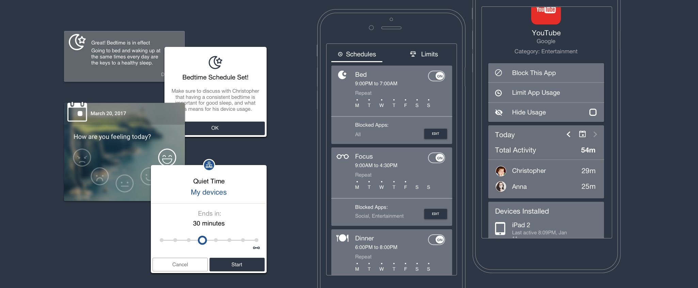

Zen Screen
Zenlabs, Co-founder (2018), acquired by Life360
In the press: TechCrunch
Zen Screen was a digital-wellbeing app built out of a startup I co-founded with a few former colleagues from Opera Software, tackling the growing issue of screen and device addiction among children.

The Concept
"Zen" emphasizes rigorous self-control and meditation practice. Rather than building another dry usage-monitoring utility, the goal was to bring that same calm, intentional feeling into how families managed screen time for themselves and their kids.
The Parent Experience
A "Parent" profile could create and track usage and activity across every device a "child" used under the account. Parents could schedule when apps were off-limits, and set daily screen-time limits to keep each child's usage within a healthy range.


Quiet Time
The centerpiece feature let a parent trigger a "Quiet Time" session remotely. On the child's device, non-essential apps would hide immediately and the device would lock, staying that way until the parent ended the session from their own phone — a simple, calm way to create tech-free windows without a confrontation over the device itself.
